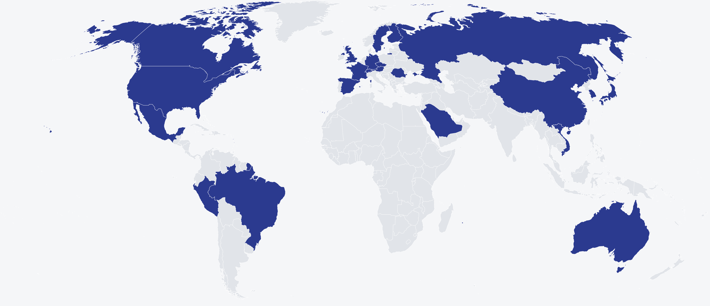

Models built on these datasets
The clearest evidence that infrastructure matters is what other people build with it. Each row runs from a dataset I co-engineered, through the model trained on it, to where that model was published. Rows marked shared authorship come from groups I have co-authored with; the rest are independent.
Open datasets
Each is a DOI-registered release on the Brain Data Science Platform, distributed under credentialed access and a signed data-use agreement. My name appears in the citation string of each.
What building these involves
The engineeringA dataset listing shows the output. These are the stages that produce it.
Ingestion and indexing. Raw studies sit in hospital systems in proprietary vendor formats, spread across archives that were never built to be queried as a corpus. The first task is knowing what exists: cataloguing every recording, reconciling it against the clinical record, and pulling it on a schedule. I run the complete daily electroencephalography pipeline for Beth Israel Deaconess from indexing through archiving.
Patient matching. A physiological recording is only useful if it can be tied to the right patient across systems that identify people differently. Getting this wrong is worse than useless, because it silently corrupts every downstream analysis.
Format conversion and annotation. Vendor formats differ by manufacturer and by decade. Each recording is converted to the Brain Imaging Data Structure standard, and I generate the BIDS-compliant annotation files for every electroencephalogram in the platform.
Electronic health record extraction and linkage. A waveform without clinical context answers few questions. I built the daily extraction of Epic-sourced record data through an enterprise data warehouse, and the linkage of that clinical data to the corresponding physiological recordings.
De-identification. Clinical recordings are protected health information. Studying records from Mass General, Beth Israel Deaconess, Brigham and Women's, Boston Children's, Emory and Stanford together would in principle require separate review-board approvals and data-use agreements from each — a barrier heavy enough to foreclose the multi-site studies clinical AI depends on. Once data is de-identified to the HIPAA Safe Harbor standard that barrier falls away. I extended Philter, the UCSF natural-language de-identification tool, with a cross-institutional abstraction layer, and applied it to millions of clinical notes, imaging reports and neurology reports.
Harmonisation. Each contributing site records under its own equipment, conventions and documentation practices. Making fourteen institutions' data comparable — rather than merely co-located — is done across institutional boundaries by definition.
Release and governed access. Each resource is registered under a DOI, versioned, and distributed through a credentialed-access layer that enforces every contributing institution's terms through signed data-use agreements. As of July 2026, 931 researchers had been approved from 1,516 applications.
I am one of three engineers on the platform, and a named Data Coordinator on the Mass General Brigham institutional review board protocols under which this work is conducted.
Documented substantial uses
Groups that trained on, validated against, or evaluated using one of these datasets — as distinct from citing it. Each is quoted or summarised from the paper itself.
Federally funded research this infrastructure supports
These awards are not mine. They are National Institutes of Health grants held by principal investigators at Massachusetts General Hospital and elsewhere, listed here because the data infrastructure I engineer is a precondition for the work they fund. Each award number resolves to its entry on NIH RePORTER, where the principal investigator is named. The platform is separately listed by the National Library of Medicine among NIH-supported data-sharing resources (search "BDSP" on that page), and receives National Science Foundation support.
Hosting and external listings
Beyond the academic literature, the datasets are hosted on Amazon Web Services infrastructure, listed on its public registry and marketplace, and carried on a joint open-science platform operated with the University of Pennsylvania.
An international challenge runs on this data
NIH-fundedIndependent peer-reviewed citations
Peer-reviewed publications by groups that share no author with me, citing work I co-authored. This is not a total citation count - it is the subset that is both independent and peer-reviewed. Filter by which of my works is cited; every identifier resolves to the source.
| Citing institution | Country | Cites | DOI / identifier |
|---|
Nature Portfolio
Papers in Nature Portfolio journals that cite or use this work, plus my own two dataset descriptors. Rows marked shared authorship come from groups I have co-authored with — they are shown for completeness, not counted as independent.
Invited editorials
Three separate journal editorial boards invited specialists to discuss studies I co-authored. One was formally designated by Sleep as the Companion Article to the study it assessed. These are separate from, and additional to, the citations above.
Preprints citing or using the work
Not peer-reviewed, and kept separate from the citations table for that reason. Several are substantial uses rather than citations — noted per row. Rows marked shared authorship come from groups I have co-authored with.
| Preprint | Authors' institutions | Cites / uses | Identifier |
|---|
Where the work is cited
Countries with at least one published independent citing group, grouped by region. Institutions whose work is still in preprint — including Germany and India — are listed in the next section and marked as such.

Journals that have published a citation
Fields of medicine
Clinical specialties in which independent groups have cited this work. The count is a floor, not a ceiling — neuroimaging is a plausible eighth via BIND.
Institutions citing the work independently
Named institutions with no shared authorship. Depth of engagement is marked: some trained or validated models on the data, some named it among the field's key resources, and some cite it as prior work.
U.S. institutions citing the work
The domestic subset, drawn from the same list. Institutions marked preprint engage the work in papers not yet peer-reviewed.
Publications
Peer-reviewed articles and conference abstracts. The complete, authoritative list is on ORCID.
How this page defines independence
MethodA citation counts as independent only if the citing paper shares no author with me.
That is a stricter test than it sounds. Large clinical datasets are built by large teams, and papers using them often carry an author in common. Every citation in the table above was checked, individually, against the full list of everyone I have co-authored with — 121 people across 19 papers and dataset releases.
Where a downstream model was built by a group I have co-authored with, it is labelled shared authorship rather than quietly counted. ECGFounder and MORGOTH are in that category; ECG-CPC, ECG-LFM, NeuroLex and CAMEL are not.
Two caveats worth stating. Citation counts understate use: the datasets are distributed through self-service credentialed access, so groups can and do use them without a formal citation. And several works listed as preprints may publish later — status shown is current, not permanent.
Get in touch
Open to collaborationIf you would like to collaborate, or to learn more about this work, you can reach me at contactadityag@gmail.com.